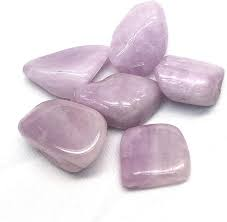
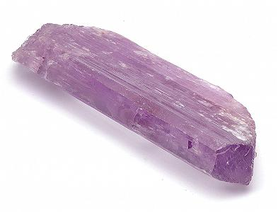

Kunzite
 Information
Kunzite is a very young gemstone. You can find Kunzite in San Diego County and California.
It’s sometimes known as The Woman’s Stone because it helps young mothers who are having a tough time taking care of their young child. It’s a pretty effective stone that will help overactive children settle down come bedtime, and the stone’s energies will also help young children have a good night’s sleep. Kunzite will bring you inner peace and give you a high capacity for achieving wisdom and understanding. It will calm all the noise and chaos in your life, and you will enjoy peace and serenity whenever you need it.
Health Benefits
You can find here some Healing Properties.
Outfits